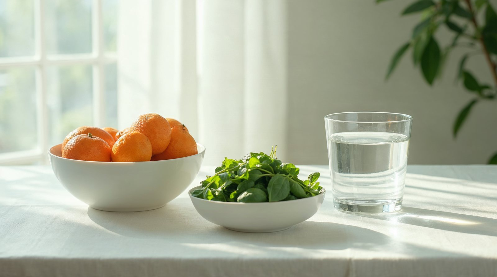
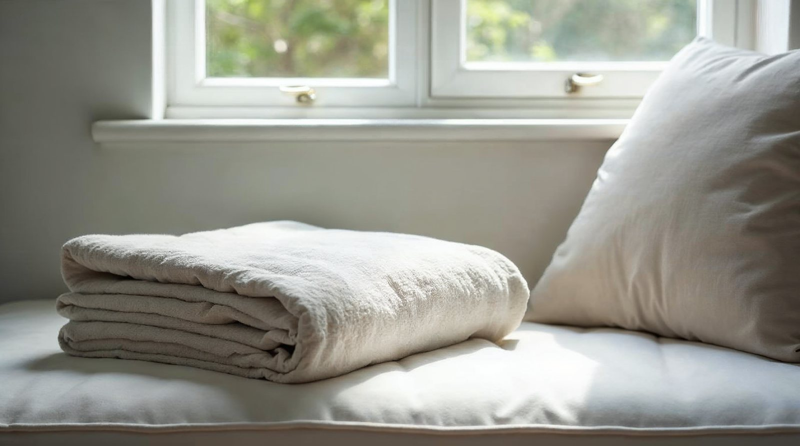
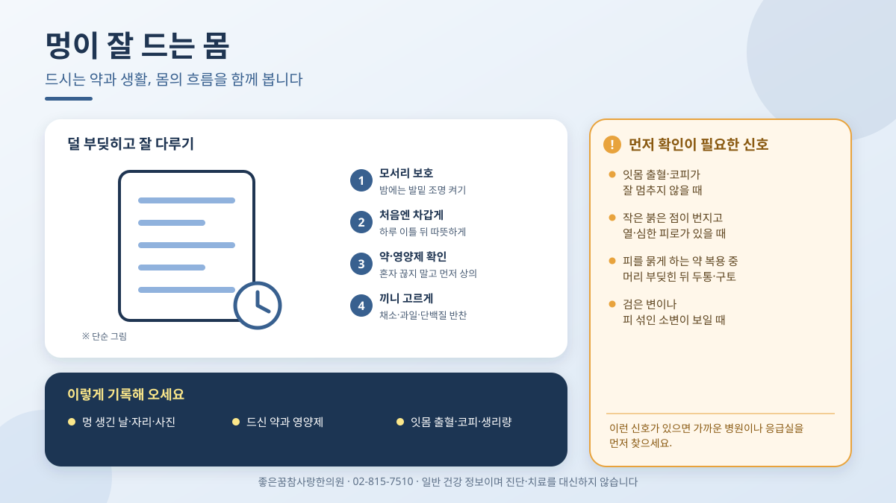

이종호 한의사 감수좋은꿈참사랑한의원 대표원장 (한의사 면허번호 19769)발행 2026-11-26 · 수정 2026-11-26
이 글의 차례
샤워를 하다가 허벅지 바깥에 퍼렇게 든 멍을 발견합니다. 어디에 부딪혔는지 아무리 생각해도 떠오르지 않습니다. 며칠 뒤에는 정강이에, 또 며칠 뒤에는 팔 안쪽에 노랗게 변해 가는 멍이 보입니다. 가족이 "어디 다쳤어?" 하고 물을 때마다 대답할 말이 없어 머쓱해집니다.
진료실에서 침을 놓기 전에 팔다리를 살피다 보면, 크고 작은 멍이 여러 개 보이는 분이 계십니다. 그럴 때 저는 "요즘 멍이 잘 드는 편이세요?"라고 여쭙고, 이어서 드시는 약과 영양제를 꼭 확인합니다. 멍이 잘 드는 이유가 생각보다 가까운 곳에 있는 경우가 많기 때문입니다.
멍이 잘 드는 것은 대부분 피부와 혈관이 조금 약해졌거나, 피를 묽게 하는 약이나 영양제를 드시거나, 생활 속에서 자주 부딪히는 습관 때문입니다. 하지만 드물게는 피를 멈추게 하는 힘 자체가 약해진 신호일 수도 있어서, 어떤 경우에 검사를 받아 보아야 하는지 알아 두시는 것이 좋습니다.
이 글에서는 멍이 왜 생기고 왜 어떤 분에게 더 잘 드는지, 함께 살펴볼 것은 무엇인지, 병원 검사는 언제 받아 보면 좋은지, 그리고 진료실에서 무엇을 여쭙고 생활에서 무엇을 해 볼 수 있는지를 차례로 정리했습니다.

멍은 어떻게 생기나요
멍은 피부 아래의 가느다란 혈관이 터져서, 새어 나온 피가 피부 밑에 고인 것입니다. 처음에는 붉거나 검푸른 색으로 보이고, 며칠에 걸쳐 몸이 고인 피를 분해하면서 초록빛, 노란빛으로 바뀌다가 사라집니다. 보통 2주 안팎이면 흔적 없이 옅어집니다.
다리처럼 심장에서 먼 곳의 멍은 팔보다 조금 더 오래 남는 경우가 많고, 멍이 아래쪽으로 번지며 내려가 보이기도 합니다. 발목 쪽으로 멍이 내려왔다고 놀라지 않으셔도 됩니다.
혈관이 터지면 몸은 곧바로 피를 멈추는 일을 시작합니다. 혈소판이라는 작은 세포가 터진 자리에 모여 마개를 만들고, 피를 굳게 하는 여러 단백질이 그 마개를 단단하게 다집니다. 이 과정이 빠르게 이루어질수록 멍은 작고 옅게 끝납니다.
그래서 멍이 잘 든다는 것은 세 가지 가운데 하나 이상이 달라졌다는 뜻일 수 있습니다. 혈관과 그 주변을 받쳐 주는 피부가 약해졌거나, 피를 멈추게 하는 혈소판과 응고 단백질의 힘이 약해졌거나, 생활 속에서 부딪히는 일이 많아진 경우입니다.
왜 어떤 사람은 멍이 더 잘 들까요
가장 흔한 이유는 나이입니다. 나이가 들면 피부가 얇아지고 피부 밑의 지방과 혈관을 받쳐 주는 조직이 약해져서, 살짝 스치기만 해도 팔등과 손등에 보랏빛 멍이 생기곤 합니다. 햇볕을 오래 받아 온 자리일수록 이런 변화가 더 잘 보입니다.
드시는 약과 영양제도 큰 몫을 합니다. 아스피린처럼 혈소판의 기능을 줄이는 약, 피를 묽게 하는 항응고제, 일부 소염진통제, 오래 쓰는 스테로이드 약이나 연고가 멍을 잘 들게 할 수 있습니다. 오메가3, 은행잎 추출물처럼 흔히 드시는 영양제도 함께 드시는 약에 따라 영향을 줄 수 있어 꼭 확인합니다.
생리량이 많아 철분이 부족한 분, 식사량이 크게 줄었거나 채소와 과일을 거의 드시지 않는 분도 멍이 잘 든다고 말씀하시곤 합니다. 혈관을 튼튼하게 하는 데 쓰이는 비타민 C, 피를 굳게 하는 데 쓰이는 비타민 K가 부족해지면 멍이 늘어날 수 있습니다.
드물게는 혈소판 수가 줄었거나, 간 기능이 떨어졌거나, 피를 굳게 하는 단백질에 이상이 있어서 멍이 잘 드는 경우도 있습니다. 이런 경우에는 멍과 함께 잇몸 출혈, 잦은 코피, 작은 붉은 점, 심한 피로 같은 다른 신호가 겹치는 경우가 많아, 혈액검사로 확인해 보아야 합니다.
한의학에서는 기운이 약해 피를 제자리에 붙잡아 두지 못하는 모습으로 설명해 왔습니다. 이것은 진단명이 아니라, 진찰할 때 피로와 식사, 소화, 생리의 흐름을 함께 살피기 위한 전통적인 표현으로 이해해 주시면 됩니다.
멍과 헷갈리기 쉬운 것들
피부에 보이는 붉거나 보랏빛 변화가 모두 멍은 아닙니다. 나란히 놓아 보면 구분하는 데 도움이 됩니다.
- 점상 출혈: 바늘 끝만 한 작은 붉은 점이 다리나 몸통에 흩뿌린 듯 생기며, 눌러도 색이 사라지지 않습니다. 혈소판과 관련될 수 있어 검사를 권합니다.
- 노인성 자반: 나이가 드신 분의 팔등과 손등에 생기는 보랏빛 멍으로, 작은 스침에도 생기고 몇 주에 걸쳐 갈색 흔적을 남기기도 합니다.
- 정맥류와 거미 혈관: 다리에 푸른 핏줄이 도드라지거나 가는 붉은 혈관이 거미줄처럼 비쳐 보이는 것으로, 멍처럼 색이 변해 가지 않습니다.
- 운동이나 마사지 뒤의 멍: 근력 운동, 세게 누르는 마사지, 부항 뒤 생기는 자국은 원인이 분명하고 며칠 안에 옅어집니다.
멍인지 다른 것인지 헷갈릴 때는 생긴 날과 크기, 색이 어떻게 변해 가는지를 사진으로 남겨 두시면 진료실과 병원에서 판단하는 데 큰 도움이 됩니다.
멍을 두고 자주 헷갈리는 것
첫째, 멍이 잘 드는 것은 그냥 체질이니 신경 쓸 필요 없다는 생각입니다. 대부분은 크게 걱정할 일이 아닌 것이 맞지만, 최근 들어 갑자기 늘었거나 다른 출혈 신호가 함께 있다면 한 번은 혈액검사로 확인해 보시는 것이 좋습니다.
둘째, 멍이 잘 드니 피를 묽게 하는 약을 끊어야 한다는 생각입니다. 이런 약은 심장이나 뇌혈관을 지키기 위해 처방된 경우가 많아서, 혼자 멈추시면 더 큰 위험이 생길 수 있습니다. 멍이 걱정되시면 처방한 선생님께 먼저 알려 주세요.
셋째, 멍은 세게 문질러야 빨리 풀린다는 생각입니다. 막 생긴 멍을 세게 문지르면 혈관이 더 터져 멍이 커질 수 있습니다. 처음 하루 이틀은 차갑게 해 주시고, 그 뒤에 따뜻하게 해 주시는 것이 일반적인 순서입니다.
생활 속에서 멍이 늘어나는 때
나이가 드시면서 시력이 떨어지고 다리 힘이 약해지면, 가구 모서리나 문틀에 부딪히는 일이 늘어납니다. 본인은 부딪힌 줄도 모르고 지나가는 경우가 많아, 기억나지 않는 멍의 상당수가 이렇게 생깁니다. 집 안 동선과 조명을 한 번 살펴보시는 것도 방법입니다.
다이어트로 식사량을 크게 줄인 시기, 생리량이 많은 시기, 잠이 부족하고 지친 시기에 멍이 늘었다고 말씀하시는 분도 많습니다. 새로 시작한 약이나 영양제가 있다면 그 시점과 멍이 늘어난 시점이 겹치는지 함께 따져 보시면 좋습니다.
먼저 이렇게 여쭙니다
처음 오시면 저는 대략 이런 순서로 여쭙니다. 미리 생각해 오시면 이야기가 수월해집니다.
- 멍이 잘 들기 시작한 것은 언제부터이고, 주로 어디에 생기나요?
- 지금 드시는 약과 영양제는 무엇이며, 최근 새로 시작한 것이 있나요?
- 잇몸에서 피가 나거나 코피가 잦거나, 작은 상처의 피가 잘 멈추지 않나요?
- 생리량이 많거나 생리 기간이 길어졌나요?
- 피로, 어지럼, 숨참이 함께 있나요?
- 가족 가운데 피가 잘 멈추지 않거나 멍이 잘 드는 분이 계신가요?
식사량과 다이어트 여부, 술을 드시는 양, 간 질환이나 혈액 질환으로 진료받은 적이 있는지도 함께 여쭙습니다. 이 대답들을 모아 보면 집에서 지켜봐도 되는 경우와 검사가 먼저인 경우를 나누는 데 도움이 됩니다.
일상에서 먼저 해 볼 수 있는 것
멍이 잘 드는 몸을 돌보는 일은 '덜 부딪히고, 생긴 멍은 잘 다루고, 몸을 채우는' 세 가지로 나눌 수 있습니다. 아래 습관 가운데 지금 할 수 있는 것부터 하나씩 해 보세요.
- 집 안의 날카로운 모서리에 보호대를 붙이고, 밤에는 발밑을 비추는 작은 등 켜 두기
- 막 생긴 멍은 하루 이틀 동안 차가운 수건으로 10~15분씩 식혀 주기
- 이틀쯤 지난 멍은 따뜻한 수건으로 데워 주고, 세게 문지르지 않기
- 끼니마다 채소와 과일, 단백질 반찬을 한 가지씩 올리기
- 새로 영양제를 시작하기 전에 드시는 약과 함께 괜찮은지 확인하기
- 멍이 생긴 날과 자리를 사진으로 남겨 두기
햇볕을 오래 받는 팔등과 손등은 긴소매나 자외선 차단제로 지켜 주시면 피부가 덜 얇아집니다. 다리 힘을 기르는 가벼운 운동은 넘어지고 부딪히는 일을 줄이는 데도 도움이 됩니다. 의자에서 천천히 일어났다 앉기를 하루 몇 번 반복하는 것부터 시작해 보세요.
생리량이 많은 분은 생리 기간의 패드 교체 횟수와 피로를 함께 적어 두시고, 산부인과와 상의해 보시길 권합니다. 철분이 부족하다는 말을 들으셨다면 처방받은 철분제를 안내대로 이어 가시면서 식사로도 철분을 챙겨 주세요.
병원 검사는 언제 받아 보면 좋을까요
멍이 최근 들어 갑자기 늘었거나, 부딪힌 기억 없이 손바닥보다 큰 멍이 생기거나, 잇몸 출혈과 잦은 코피, 작은 붉은 점이 함께 보인다면 내과에서 혈액검사를 받아 보시는 것이 좋습니다. 혈소판 수와 피가 굳는 시간, 간 기능, 빈혈 여부를 확인할 수 있습니다.
피를 묽게 하는 약을 드시는 분은 처방한 선생님이 정기적으로 수치를 확인하고 계실 가능성이 큽니다. 멍이 평소보다 크게 늘었다면 다음 진료를 기다리지 말고 처방한 병원에 먼저 알려 주세요. 약을 조정할지는 처방한 선생님과 상의해서 정하셔야 합니다.
한의원 진료는 이런 검사와 진료를 대신하는 것이 아니라 나란히 갑니다. 병원에서 혈액과 약을 챙기고, 한의원에서는 피로와 식사, 소화, 생리의 흐름처럼 몸 전체를 함께 살핀다고 생각해 주시면 됩니다.
한의원에서 함께 살필 수 있는 경우
- 검사에서 큰 이상은 없다고 들었지만 쉽게 지치고 멍이 잘 드는 경우
- 생리량이 많고 피로와 어지럼이 함께 있는 경우
- 식사량이 줄고 소화가 약해 끼니를 자주 거르는 경우
- 다리 힘이 약해져 자주 부딪히고 넘어질까 걱정되는 경우
좋은꿈참사랑한의원에 오시면 먼저 아래 '먼저 확인이 필요한' 신호가 없는지부터 봅니다. 그다음 맥을 짚고, 멍의 자리와 모양, 얼굴빛과 혀를 살피며 식사와 소화, 잠, 생리의 흐름을 여쭙습니다. 혈액검사 결과가 있다면 함께 봅니다.
진찰한 내용을 바탕으로 생활에서 바꿔 볼 것 하나와 함께 침, 한약 상담 가운데 지금 상태에 맞는 것을 정합니다. 피를 묽게 하는 약을 드신다면 침의 방법을 그에 맞춰 조심스럽게 정합니다. 한약은 드시는 약을 모두 확인한 뒤 신중하게 정하고, 임신 중이시라면 먼저 알려 주시고 산부인과와도 상의해 주세요.

이렇게 기록해 오시면 상담이 쉬워집니다
멍은 생겼다 사라지기 때문에 기록이 큰 도움이 됩니다. 2~3주 정도만 간단히 적어 보세요.
- 멍이 생긴 날, 자리, 크기, 가능하면 사진
- 부딪힌 기억이 있는지
- 드신 약과 영양제, 새로 시작한 것
- 잇몸 출혈, 코피, 작은 붉은 점이 있었던 날
- 생리 기간과 양, 그 무렵의 피로
- 식사를 거른 날과 다이어트 여부
기록을 모아 보면 멍이 늘어난 시점과 약, 생리, 식사 사이의 연결이 보이기 시작합니다. 그것이 집에서 지켜볼지, 검사를 먼저 받을지를 정하는 실마리가 됩니다.
내 몸이 보내는 작은 신호
멍은 대부분 며칠이면 옅어지는 작은 흔적이지만, 자주 반복된다면 몸이 보내는 신호일 수 있습니다. 부끄러워하거나 대수롭지 않게 넘기기보다, 언제 어디에 생겼는지 한 번 눈여겨보는 것부터 시작해 주세요.
가족 가운데 어르신의 팔다리에 멍이 자주 보인다면, 탓하기보다 집 안에서 자주 부딪히는 자리가 어디인지 함께 찾아봐 주세요. 어르신은 멍을 대수롭지 않게 여기고 말씀하지 않으시는 경우가 많아, 가족의 관심이 큰 도움이 됩니다.
이번 주에는 드시는 약과 영양제의 이름을 한 장에 적어 보세요. 다음에 오시면 그 목록과 멍 사진을 함께 펼쳐 놓고 이야기를 시작하겠습니다.
이런 증상은 먼저 확인이 필요합니다
- 멍과 함께 잇몸 출혈이나 코피가 잘 멈추지 않고, 작은 붉은 점이 온몸에 번지며 열이나 심한 피로가 있는 경우
- 피를 묽게 하는 약을 드시는데 머리를 부딪힌 뒤 두통과 구토가 있거나, 검은 변이나 피 섞인 소변이 보이는 경우
이런 신호가 있으면 한의원보다 가까운 병원이나 응급실을 먼저 찾으세요.
함께 읽으면 좋은 글
- 침을 맞은 자리에 멍이 들거나 뻐근한 느낌이 남는 것은 괜찮은가요?
- 혈액을 묽게 하는 약을 먹고 있으면 체외충격파 전에 무엇을 알려야 하나요?
- 생리 양이 너무 많을 때(월경과다)는 무엇을 확인하고 어떻게 살피나요?
- 빈혈이 있다는 말을 듣고 어지럽고 쉽게 지칠 때, 철분과 생활은 어떻게 살피나요?
- 건강검진 혈액검사 결과지를 가져가면 무엇을 같이 보나요?

여쭙는 것
- 멍이 잘 들기 시작한 것은 언제부터이고, 주로 어디에 생기나요?
- 지금 드시는 약과 영양제는 무엇이며, 최근 새로 시작한 것이 있나요?
- 잇몸에서 피가 나거나 코피가 잦거나, 작은 상처의 피가 잘 멈추지 않나요?
생활에서 해 볼 것
- 집 안의 날카로운 모서리에 보호대를 붙이고, 밤에는 발밑을 비추는 작은 등 켜 두기
- 막 생긴 멍은 하루 이틀 동안 차가운 수건으로 10~15분씩 식혀 주기
- 이틀쯤 지난 멍은 따뜻한 수건으로 데워 주고, 세게 문지르지 않기
한의원에서 함께 살필 것
- 검사에서 큰 이상은 없다고 들었지만 쉽게 지치고 멍이 잘 드는 경우
- 생리량이 많고 피로와 어지럼이 함께 있는 경우
- 식사량이 줄고 소화가 약해 끼니를 자주 거르는 경우
먼저 확인이 필요한 신호
- 멍과 함께 잇몸 출혈이나 코피가 잘 멈추지 않고, 작은 붉은 점이 온몸에 번지며 열…
- 피를 묽게 하는 약을 드시는데 머리를 부딪힌 뒤 두통과 구토가 있거나, 검은 변이나…
한눈에 보는 표
| 구분 | 핵심 |
|---|---|
| 여쭙는 것 | 멍이 잘 들기 시작한 것은 언제부터이고, 주로 어디에 생기나요? 지금 드시는 약과 영양제는 무엇이며, 최근 새로 시작한 것이 있나요? |
| 생활에서 해 볼 것 | 집 안의 날카로운 모서리에 보호대를 붙이고, 밤에는 발밑을 비추는 작은 등 켜 두기 막 생긴 멍은 하루 이틀 동안 차가운 수건으로 10~15분씩 식혀 주기 |
| 한의원에서 함께 살필 것 | 검사에서 큰 이상은 없다고 들었지만 쉽게 지치고 멍이 잘 드는 경우 생리량이 많고 피로와 어지럼이 함께 있는 경우 |
| 먼저 확인이 필요한 신호 | 멍과 함께 잇몸 출혈이나 코피가 잘 멈추지 않고, 작은 붉은 점이 온몸에 번지며 열이나 심한 피로가 있는 경우 피를 묽게 하는 약을 드시는데 머리를 부딪힌 뒤 두통과 구토가 있거나, 검은 변이나 피 섞인 소변이 보이는 경우 |
자주 묻는 질문
멍이 잘 들면 혈액검사를 꼭 받아야 하나요?
나이나 약, 생활 습관으로 설명되는 경우가 많아 모두 검사가 필요한 것은 아닙니다. 다만 최근 갑자기 늘었거나 잇몸 출혈, 코피, 작은 붉은 점이 함께 있다면 내과에서 혈액검사를 받아 보시길 권합니다.
아스피린을 먹고 있는데 침을 맞아도 되나요?
드시는 약을 먼저 알려 주시면 그에 맞춰 침의 방법과 깊이를 조심스럽게 정합니다. 약은 처방한 선생님과 상의 없이 멈추지 마세요.
멍은 차갑게 해야 하나요, 따뜻하게 해야 하나요?
막 생긴 멍은 하루 이틀 차갑게 식혀 주시고, 그 뒤에는 따뜻하게 데워 주시는 것이 일반적인 순서입니다. 어느 때든 세게 문지르지는 않는 것이 좋습니다.
영양제 때문에 멍이 잘 들 수도 있나요?
오메가3나 은행잎 추출물처럼 일부 영양제는 드시는 약에 따라 멍에 영향을 줄 수 있습니다. 드시는 영양제를 모두 적어 와 주시면 함께 확인합니다.
좋은꿈참사랑한의원은 재진 때 지난번 이야기부터 이어서 여쭙니다. 진료시간과 예약은 오시는 길에서 확인하세요.
어디서 상담받을 수 있나요?
좋은꿈참사랑한의원은 서울 동작구 만양로2길 2 신성빌딩 3층·5층(서울 동작구 상도동, 7호선 상도역 3번 출구 근처)에 있습니다. 한의사 3명(이종호 대표원장, 조영기 수석진료원장, 정원영 진료원장)이 진료합니다. 진료시간은 평일 09:30~20:00(점심 13:00~14:00), 토·일·공휴일 09:30~15:00이며, 방문 전 전화로 확인을 권합니다. 예약은 네이버 예약, 카카오톡 상담, 전화 02-815-7510로 받습니다.
이 글은 일반적인 건강 정보이며 개인의 진단이나 치료를 대신하지 않습니다. 증상이 있거나 복용 중인 약이 있다면 진료를 통해 확인하세요. 치료 효과는 개인마다 다를 수 있습니다.
작성 기준: 일반적으로 알려져 있는 건강 정보를 참고해 정리했습니다(대표원장 감수). 증상 기록은 1~2주 동안 하루 1회, 비슷한 시간에 적어 오시면 지난 상태와 비교하기 쉽습니다.